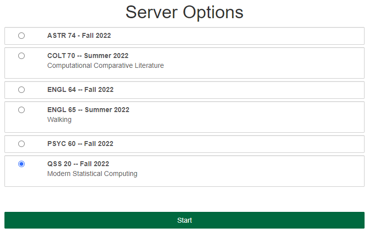
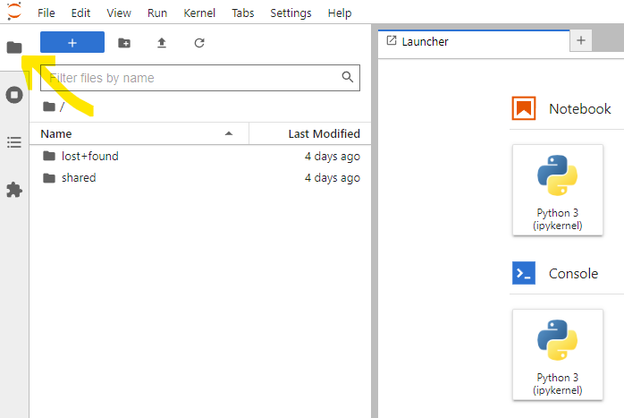
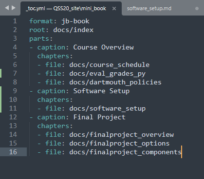

Overview of tools
Contents
Overview of tools#
We will be using the following tools in the course:
Course announcements and communication: Slack. You can join by going to the Canvas course page, following these instructions to get Slack icon to appear (https://services.dartmouth.edu/TDClient/1806/Portal/KB/ArticleDet?ID=115062), and joining the course workspace. We will be adding channels as the course goes along, but current ones to join are:
#pythonhelp_general: this channel can be used for general python questions, and we’ll also have problem set specific channels.#datacamp_questions: these are questions about DataCamp, esp. about making sure your account is set up.
Remote computing environment (for shorthand: jhub): Arnold Song in Dartmouth’s Research Computing will be setting up a dedicated course server on Dartmouth’s jupyter hub. This allows you to open up any browser (chrome; firefox) etc. and complete Python tutorials without needing to download data or files locally / deal with package installation issues. More details on the server are below.
Locally-installed python (for shorthand: local python): eventually, you’ll leave the course and Dartmouth and need to know how to use Python locally. So in addition to jhub, I’m asking you to install the necessary software to run things locally: Python 3.8+ via the Anaconda distribution system
Terminal/terminal emulator: mainly for interfacing with Git/GitHub. See instructions below for installation.
Git/GitHub: one of the course goals is to get you more familiar with using Git/GitHub for version control. You can interact with GitHub both from the jhub remote environment and from your local machine. Instructions below for each and we’ll have an in-class activity where you create your own repo and add me as a collaborator.
LaTeX/Overleaf: we’ll be using the LaTeX typesetting software to (1) integrate writing and formulae, (2) more cleanly integrate figures into writeups. We’ll be interacting with LaTeX through Overleaf, so please create an account at this link (can link to your Dartmouth email or general gmail/email if you want access over time): https://www.overleaf.com/learn/how-to/Can_I_try_Overleaf_without_signing_up%3F.
We won’t be using a non-online LaTeX editor, but you can find information on installing those by googling “how to install LaTeX” and some popular editors include TeXworks and LaTeXiT.
Jhub#
Here are the instructions that will be relevant once JHUB is activated (~ week of January 10th):
Step one: Navigate to: jhub.dartmouth.edu while logged in with your Dartmouth netid. If you’re off campus, you may need to connect to Dartmouth VPN (instructions here and email Dartmouth IT about issues). You should see an option for a course. Click on it and the server will start up (takes 20-30 seconds)
{kind=link}
Step two: Navigate to the folder for qss20 if you want to work outside the class’ shared space and create your own file:
{kind=link}
Step three: To open up a notebook from scratch, click new on the top right and start a new python3 notebook/kernel by clicking Python 3. Make sure to give it a name:
{kind=link}
Step four: If interfacing with GitHub from jhub, to open a terminal, click on the terminal in that same top right menu and a terminal that works similarly to your local one should appear that uses same syntax:
{kind=link}
We’re going to mainly focus on interfacing with GitHub from your local comp. so don’t worry too much about the remote terminal for now.
Getting content added to the GitHub repo to appear#
Content that I create for you guys (slides; in-class activities) should automatically populate into the following directory: shared/qss20. However, you might need to restart your server for the content to populate using the following steps:
Click the “Control Panel” button in the upper right corner
Then click “Stop My Server”
Then, click “Start My Server”
Local Python#
Please download Python 3.8+ (if compatible with your OS) or Python 3.7 through the Anaconda distribution system. 3.8+ is strongly preferred due to compatibility between pkl files
Terminal/terminal emulator#
Why do I need this? in the course, we’ll be reviewing basic “command line” syntax. Knowing this is needed for:
Interacting with GitHub: while there are ways to interact with GitHub through the online user interface, GitHub’s full functionality depends on being able to interact with repositories (basic folders that store code) through the command line.
Executing .py or .R scripts that take a long time to finish executing: ideally, you should write code that is efficient (runs quickly). But sometimes, regardless of how efficient the code is, things take a long time to run or are better run on servers than on your laptop that likely has limited computing resources. This requires being able to execute code by telling your computer to run a script and sometimes feeding that script arguments to parse.
Macs#
Macs have a built in terminal (to access, go to: 1. Search -> 2. Terminal). Below’s a screenshot of what mine looks like when I’m navigated to a particular directory (Dropbox and a folder called optimizingschools_publicviews):
{kind=link}
I recommend also using screen to be able to start long-running processes, detach from them while they are running, and re-attach when they’re done: http://www.kinnetica.com/2011/05/29/using-screen-on-mac-os-x/
Some people prefer tmux for that purpose.
Windows#
Windows computers have various “terminal emulators,” or things that, like terminal on Mac, help you go from the normal operating system you see, that often involves clicking on different folders, to interacting with files and programs through Unix commands.
A couple popular ones are:
https://www.cygwin.com/: cygwin operates a bit weirdly when, upon first install, you need to check the packages that you want installed. I recommend checking screen.
Git/GitHub#
We’ll go over more Git/GitHub instructions during the relevant class session. Before that session:
Install Git if it’s not installed already: https://git-scm.com/book/en/v2/Getting-Started-Installing-Git
Create a GitHub account if you don’t have one already (any email and free subscription is fine): https://docs.github.com/en/github/getting-started-with-github/signing-up-for-a-new-github-account
Text editor#
Why do I need this? for longer-running code, a workflow might be:
Write and test the code on a small sample of data in an IDE like:
Jupyter notebook (in a python notebook, or .ipynb file) or
Rstudio (in a Rmarkdown file, or .rmd file)
Then, translate the code into script form that can be run all at once without having to execute each cell, so:
Converting a python file from .ipynb (notebook form) to .py (script form)
Converting an R file from .Rmd (rmarkdown form) to .R (script form)
For step two, the code can be opened in any basic text editor that comes standard on your machine (e.g., text editor on Macs). But it’s nice to have a more visually appealing text editor meant for code that highlights parts of the syntax (e.g., the start of a function) to more easily catch mistakes.
Options (definitely non-exhaustive!):
Text editors are also good for yaml files, which can be used to store things like passwords/credentials to access APIs. Here’s an example of Sublime Text and a yaml file I have that has the table of contents for this QSS20 course website:
{kind=link}